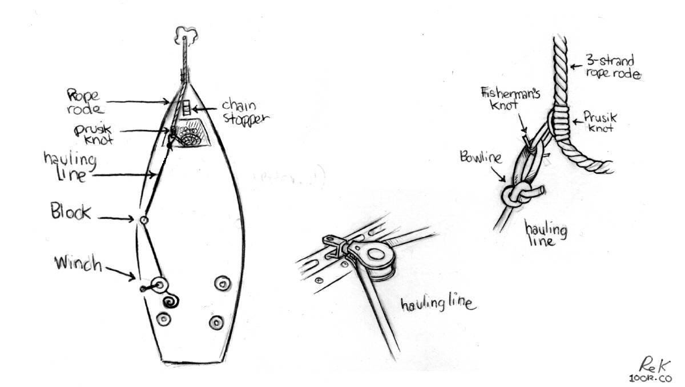

no windlass

We haul the anchor up by hand most times, but when anchored in thick mud, or deeper waters, we like to lead a line back to the cockpit, and to use the above method to haul up the anchor rode and anchor. It is easy to get hurt when there is a lot of weight on the anchor, due to water depth or bottom consistency. We have used this method often when anchoring in Northern British Columbia and Us Se Alaska. The deepest we've anchored so far is 22 m (75 ft), with about 68 m (225 ft) of rode out(30 m/100 ft or chain, 38 m/125 ft of rope rode).
Note that this is a method that works for us, we don't expect others to abandon their electric/manual windlasses in favor of this. It is a different sort of complexity than a windlass, but can be a good option for those who need an extra kick when hauling in the line by hand. This technique is ideal for smaller, lighter boats. We use a Barient 25 winch(not self-tailing) aboard, a quality, well-sized cockpit winch helps to haul in the anchor rode.
Using this method, can only heave up a short length of chain at a time. When the chain hook is near the block amidships, we engage the chain stopper, loosen the line at the winch, move the chain hook forward, pull some more, and repeat.
If we have a lot of rope rode out in the water, we use a rope loop(made using a double fisherman's knot, see above) and tie it to the 3-strand nylon rode using a prusik knot. (Note that our rope loops are a little long, making shorter loops means that it would be possible to haul in more rope rode).
Evidently, it is also possible to lead the 3-strand line itself back to a cockpit winch and to haul it in continuously, accumulating the rode in the cockpit. The problem with this technique though is that the angle from the bow roller to the cockpit winch will likely not be very good, the rode may drag on cabin top or worse, the windows. It's not possible to run the line through a block because the ends aren't free(we can't pass the entire rope rode though it), it's not possible to run them through the block to get a better angle, unless somehow it's possible to open the block and to run the line through.
Like with the chain hauling method, our hauling line attaches to the rope loop forward of the boat, and is led back to a cockpit winch.
In the drawing below, we use a bowline to tie the hauling line to the rope loop, but we now have the chain hook secured to the end of the hauling line and put the chain hook through the loop instead..
When the chain hook arrives amidship at the block, we tie another rope loop using a prusik knot again, we tie it forward on the line to release pressure(this is like engaging the chain stopper). We secure the tension-relieving prusik knot loop on a cleat, then the prusik knot on the hauling line is relieved of tension and it is possible to loosen it to slide it forward on the 3-strand line back to the bow to begin another round of hauling. Prusik knots bind under pressure, but are very easy to undo when there is no weight on the line. When the hauling line is back under tension, we unhook the prusik knot loop from around the cleat, and take it off the rope rode altogether until needed again.
Hauling an anchor this way is not a very fast process, but it works. We tested this method in difficult conditions when we needed to leave Ratz Harbor quickly on June 8th 2024, after the weather had turned sour. Note that it is very challenging to do in big weather, everything is under a lot of pressure, you must be careful. It is ok to do under normal conditions, again, it just takes time.
Self-tailing winch. We don't have self-tailing winches in the cockpit, having one would make it easier to haul up the anchor. Devine is at the winch and can't hold the line effectively while winching, especially if there is a lot of rope rode out, so the second person goes to the cockpit to hold the bitter end, applying pressure to keep the line tight around the winch drum. Once the chain hook reaches the block amidship, Rek goes to the bow to engage the chain stopper(if hauling chain) or to tie a prusik knot to the rope rode and securing the line to a cleat.
Even if you have an electric or manual windlass aboard, consider carrying extra blocks, a chain hook and rope loops as a safety backup. Your cockpit winches are very powerful, you can haul an anchor with one no problem. Motor boats ought to consider installing a winch somewhere aboard in case of windlass failure, a winch is also useful to pull in a line when stern-tying. Learn how to do a prusik too, practice and master it before you need to do it under pressure.

One major downside of hauling the anchor up this way is that it makes a big mess on deck, as we drag a muddy chain over it. If the chain has some rust on it, this too will leave a mark. We have a long streak from bow to amidship that does not wash away easily, some more abrasive products would help(we have some products aboard), but we prefer not to use harsh products while in pristine waters.
When hauling the anchor we wear strong gloves. A pair of gloves lasts us maybe 3-4 years.